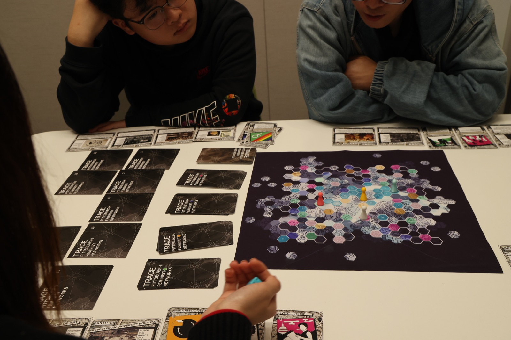
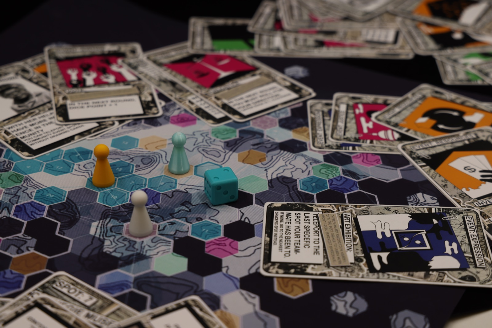
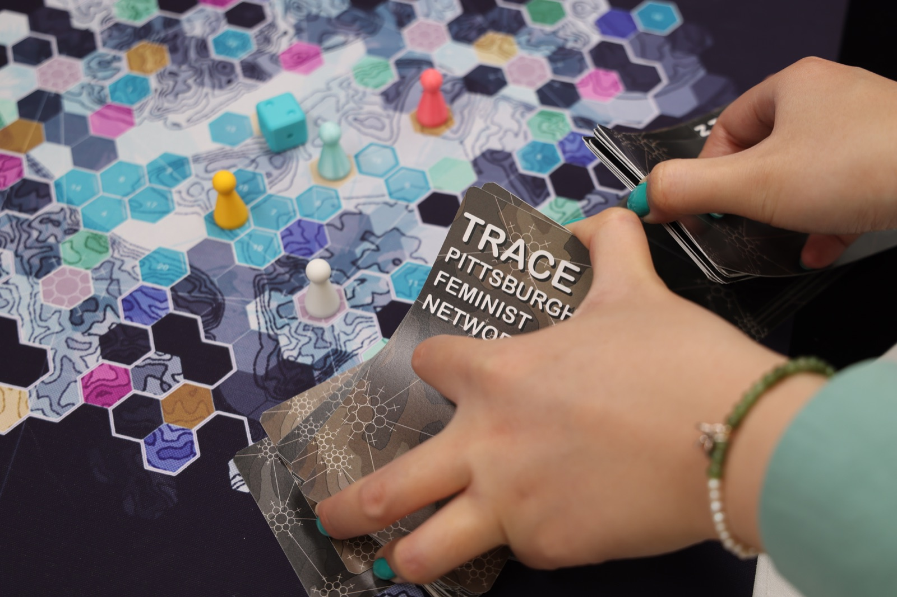
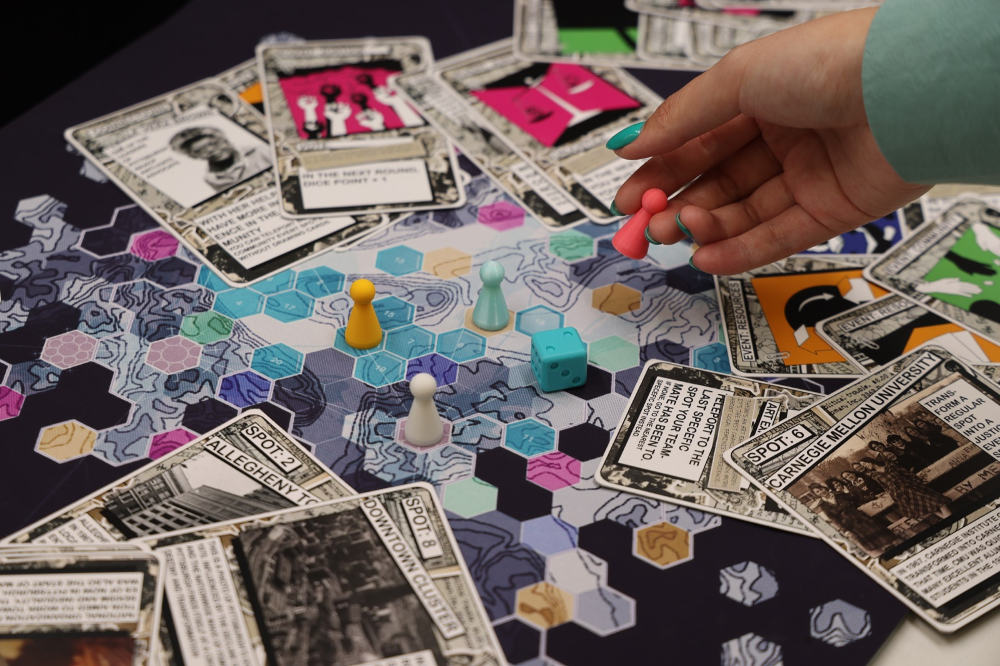
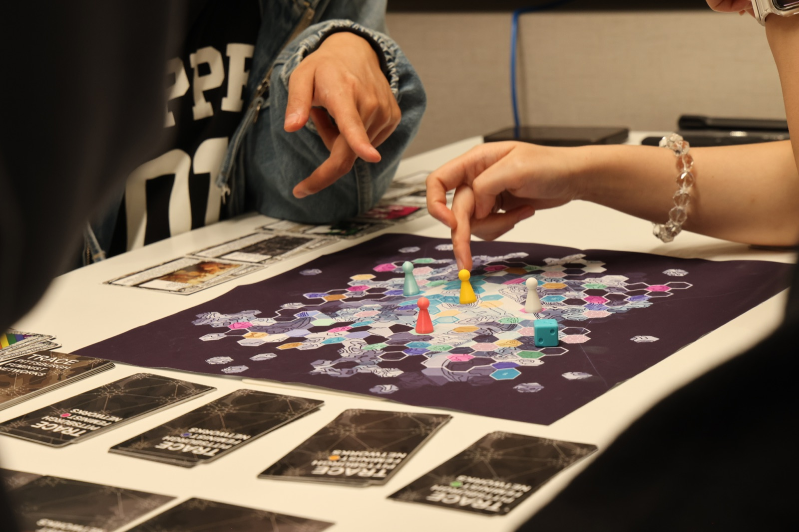
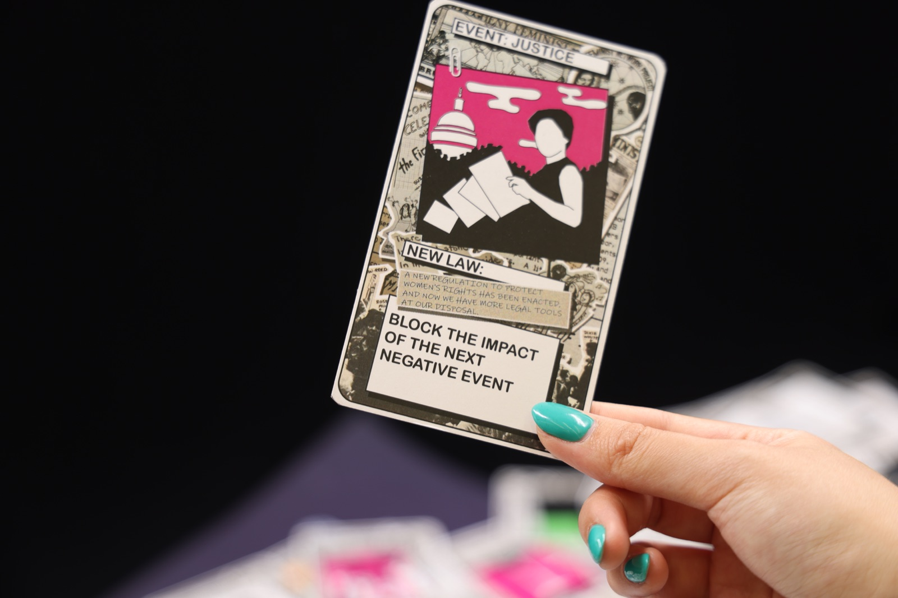
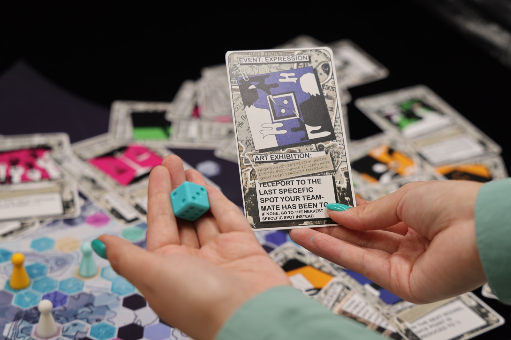
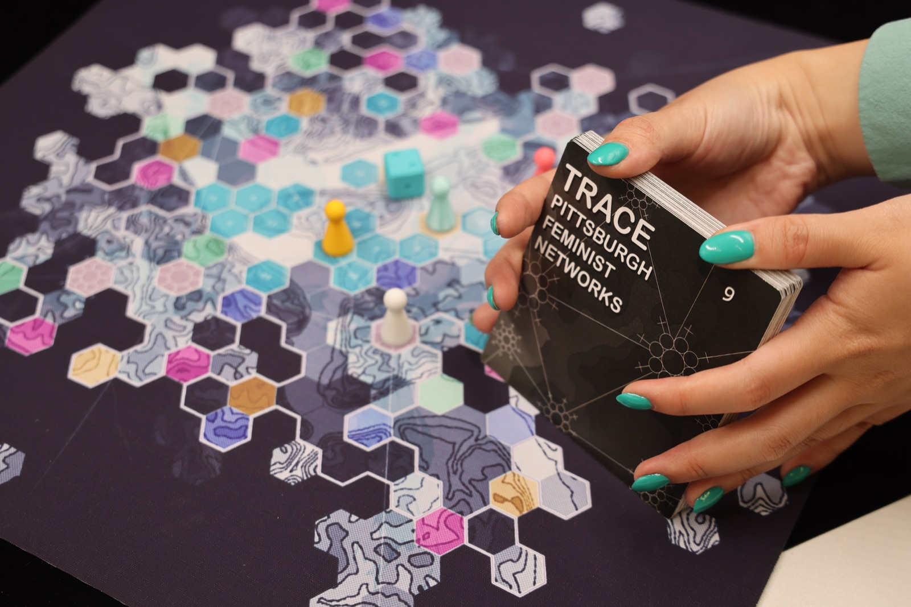
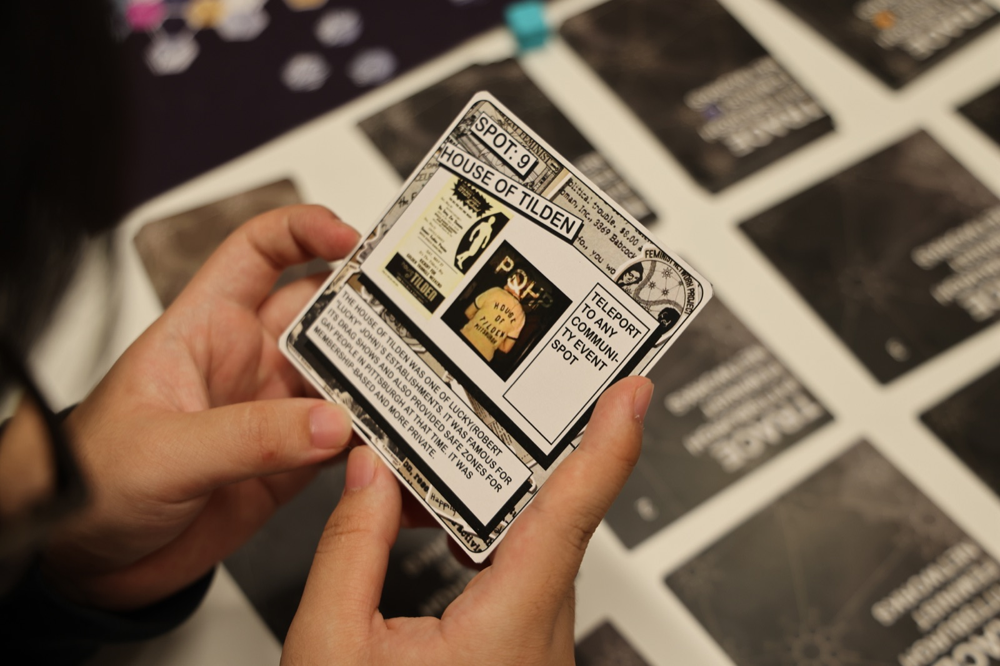
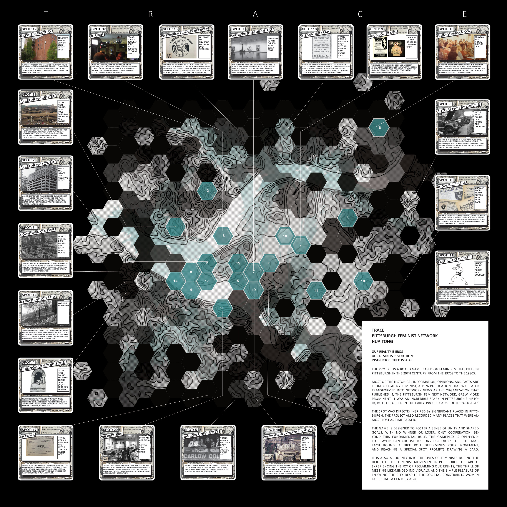

About Allegheny Feminists
It all started with a piece of newspaper from 1970s Pittsburgh. The newspaper is called Allegheny Feminists. At the time, it was one of the most popular feminist publications in the Pittsburgh region. The newspaper debuted in November 1976 and was printed by KNOW Press of Wilkinsburg, a local feminist printing press. The Allegheny Feminist was published monthly until 1981, when it was renamed The Network News.
I found out that I can access real newspapers from the 1970s at Susanna Downie's archive at the University of Pittsburgh, so I reached out and read all the available prints of the press. Here are some of the pages included in the archive. It was surely an archive with a high barrier to entry, which is hard for the average history learner to access.
I wasn't thinking straight at that time. And surely I don't like old newspapers.
As a feminist and a queer person living in Pittsburgh, I have every reason in the world to learn about the history. Yet the newspapers themselves were hardly an engaging way for me to learn about any of this.
The press calls itself a network, and Pittsburgh owns a map. Something clicked in my mind: What about making this into a set-map board game? If any way works for a group of impatient, self-diagnosed ADHD young adults like me to voluntarily learn spatial political history, this is it.
After collecting and categorizing the information I got from the archive about feminists' daily life and political communication in the 1970s in Pittsburgh, I started the design of the card sets.
Publication history: University of Pittsburgh Archives & Special Collections ↗ · Pitt Rare Books ↗
First Iteration
For the first iteration, I only made 5 categories of event cards, several connection cards with no real figures on them, and no spot cards. I used a square grid as the map structure, and soon realized it wasn't fun enough.
The rule was also too rigid. To bring more potential into the game, I decided to create a new game system.
Roll the die
For the final iteration, I decided to make rules only for how players move on the board, with no other restrictions. Players are able to decide on their own goals for exploring the map, and learn about the history of Pittsburgh feminists' 1970s political movements in their own ways.


Here are photos of my friends (at Guanyun Lab) actually playing the board game and having fun with it. They said that they had fun and also learned a lot about Pittsburgh, feminist movements, and women's quality of life in the 1970s.



If you also want to explore the playable archive, you can enjoy the digital copy of the original game. Despite being vibe-coded, all cards, effects, and maps are identical to the original tangible game.
Play Trace digitally



Card Archive
Spots
